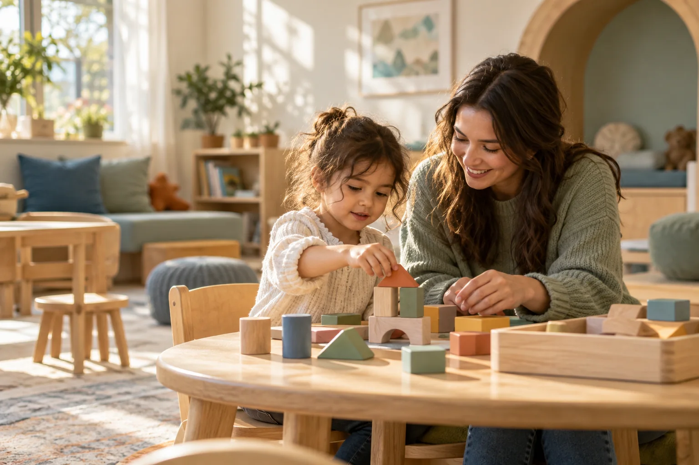

Explain the service
A dedicated care page makes the assessment, goals and family participation discussable. It avoids assuming every visitor is ready to enroll.
Ahsan Khan / Selected work
Kitewell is a self-initiated pediatric ABA concept. I designed the website, content system and social presence around the questions a family needs answered before contacting a clinic.
Explore the clinic website
Room to grow.
Space to be themselves.
The brief
A clinic website needs to do more than generate an inquiry. It needs to explain the service, make practical details findable and set expectations for the work that follows.
This project explores that connection through a fictional brand and two example locations. Published guidance and provider website structures informed the design; no clinic interviews or operational audit were conducted.
Read the research notesThe website decisions
A dedicated care page makes the assessment, goals and family participation discussable. It avoids assuming every visitor is ready to enroll.
Location pages, insurance questions and the getting-started process help families understand what the next step involves.
Family inquiries and professional referrals have different contexts. Both should arrive with a clear owner and acknowledgement.
Brand & content system
Each platform carries useful content in a suitable format, then connects to a relevant page on the clinic site.
Beyond the inquiry
Campaigns and website content create expectations. Intake needs a clear destination, enough appropriate information and a way to confirm receipt. Clinical recommendations, benefits work and payer decisions remain with the teams responsible.
The deeper workflow prototype explores those responsibilities and exception paths using separate synthetic snapshots. It demonstrates requirements, rather than a working connection to an EMR or billing platform.
Explore the handoff prototypeDeliverables & evidence
Detailed clinic pages, two location concepts, practical family guides, four social-channel previews, an interactive sample inquiry and a separate portfolio narrative.
Completed intake cohorts, response time and unresolved items, and progression to completed assessments. Billing outcomes need separate ownership and attribution limits.
Test service understanding and key tasks with caregivers and intake staff. Confirm clinical wording, real locations, service eligibility, staffing, plan participation and referral requirements.
No live campaign, clinic integration, patient outcome or financial improvement has been measured. This is an independent concept, not a client engagement.
Making the concept tangible
The expanded experience includes a four-space tour, a three-route starting point, a selectable question pack, distinct location scenarios and a coherent family-materials concept.
The checklist downloads and prints. The tour and social stories can be explored. These are demonstrable design decisions, not evidence of clinical outcomes or conversion improvements.
Explore the family visit guideAhsan Khan
Clinic websites, content and the handoffs behind them.